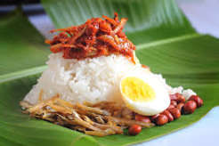

**Nasi Lemak** is Malaysia’s iconic national dish, centered around fragrant rice cooked in coconut milk and pandan leaves. It is served with a spicy, savory chili paste (*sambal*), crispy anchovies, roasted peanuts, hard-boiled egg, and fresh cucumber slices. Often wrapped in a banana leaf packet or paired with fried spiced chicken or beef rendang, it offers a perfect balance of rich, spicy, salty, and crunchy flavors.